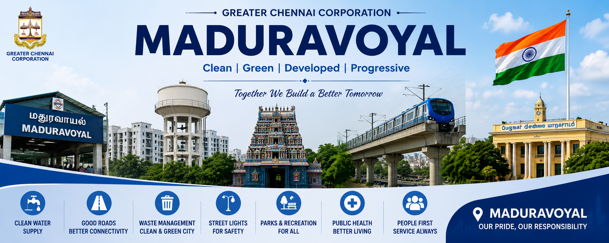

Get in touch with the Local Administration of Madhuravoyal for enquiries,
suggestions and public service information.

Office Information
The Greater Chennai Corporation is committed to providing transparent,
efficient and citizen-friendly public services. Residents of Madhuravoyal
can contact the local administrative office regarding civic issues,
government schemes, certificates, sanitation, roads, water supply,
property tax, and various public welfare programmes.
Citizens are encouraged to visit the office during working hours or use
online government services for faster processing of applications and
complaints. The administration welcomes suggestions from residents to
improve public infrastructure and civic facilities.
Office Address
Greater Chennai Corporation
Madhuravoyal Zone Office
Chennai District
Tamil Nadu
India
Office Working Hours
Day
Timing
Monday
9:30 AM - 5:30 PM
Tuesday
9:30 AM - 5:30 PM
Wednesday
9:30 AM - 5:30 PM
Thursday
9:30 AM - 5:30 PM
Friday
9:30 AM - 5:30 PM
Saturday
9:30 AM - 1:00 PM
Sunday
Holiday
Citizen Enquiry Form
Emergency Contact Numbers
In case of emergencies, citizens can contact the following government departments for immediate assistance. These emergency services are available to protect public safety and provide quick support during accidents, medical emergencies, fire incidents, and law enforcement situations.
Department
Emergency Number
Police
100 / 112
Fire & Rescue Services
101
Ambulance
108
Women Helpline
181
Disaster Management
1070
Greater Chennai Corporation
1913
Frequently Asked Questions (FAQ)
1. How can I apply for a Birth Certificate?
Citizens can apply through the Greater Chennai Corporation office or the official online government portal by submitting the required documents.
2. How do I pay Property Tax?
Property tax can be paid online using the official Corporation website or by visiting the nearest Corporation office.
3. Where can I report damaged roads or street lights?
You can submit complaints through the local Corporation office or use the official online grievance portal.
4. What are the office working hours?
The office normally functions from Monday to Friday between 9:30 AM and 5:30 PM, while Saturday has limited working hours.
Citizen Charter
The Greater Chennai Corporation is committed to delivering transparent, accountable, and citizen-friendly public services. Every citizen has the right to receive timely government services, respectful communication, and fair treatment. The administration continuously works to improve civic facilities and public welfare through efficient governance.
Citizens are encouraged to participate in maintaining cleanliness, protecting public property, following civic rules, and supporting government initiatives that contribute to the development of Madhuravoyal and Chennai.
Useful Government Services
Birth Certificate Services
Death Certificate Services
Property Tax Payment
Trade License
Building Approval
Water Supply Services
Road Maintenance Complaints
Garbage Collection Complaints
Public Health Services
Online Citizen Grievance Portal
Citizen Feedback
Your valuable suggestions help improve government services and public infrastructure. Citizens are encouraged to provide constructive feedback regarding sanitation, drinking water, roads, parks, healthcare, education, and other civic facilities. Public participation plays an important role in strengthening local governance and improving the quality of life for everyone.
Our Mission
Our mission is to provide efficient public administration, quality civic services, transparent governance, and sustainable development while ensuring that every citizen enjoys equal opportunities, safety, and a clean environment. We strive to build a modern, smart, and citizen-friendly Madhuravoyal.
Help
This Contact page has been created to help students and citizens understand how to communicate with local government departments and access important public services. The information provided here is intended for educational purposes as part of an HTML learning project.